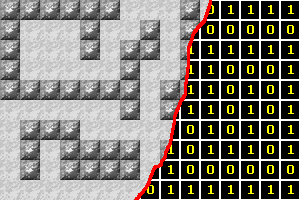
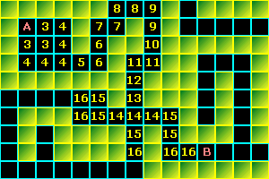

| << Sortowanie b¹belkowe Spis Strona g³ówna Kolejka >> |
Oto jedna z najczêstszych przeszkód, które staj¹ m³odym twórcom gier na drodze do niechybnego sukcesu: poszukiwanie drogi w³aœnie ;-). Jak sprawiæ, by potworki i inne bestyje w naszej wspania³ej grze nie sta³y jak s³upy soli tudzie¿ nie b³¹ka³y siê po jakichœ mrocznych zak¹tkach bez celu? Otó¿ jeœli ju¿ okreœlimy, gdzie dany potworek ma iœæ - a najczêœciej ma iœæ ku naszej skromnej postaci, z zamiarami przyjaznymi inaczej ma siê rozumieæ - musimy zastosowaæ odpowiedni algorytm, aby w miarê szybko znaleŸæ najkrótsz¹ drogê z miejsca, gdzie potworek aktualnie siê znajduje do miejsca gdzie znajduje siê potencjalny obiad potworka.
Metoda, któr¹ tutaj przedstawiê, jest jedn¹ z najprostszych, a zarazem jedn¹ z najlepszych. Jest doœæ szybka, zawsze znajduje drogê (o ile takowa istnieje, oczywiœcie) i w dodatku zawsze jest to droga najkrótsza. W odmêtach sieci mo¿na wprawdzie znaleŸæ bardziej zaawansowane algorytmy, które na ogó³ s¹ nieco szybsze, ale maj¹ mnóstwo innych wad, np. nie zawsze znajduj¹ najkrótsz¹ trasê albo wykrzaczaj¹ siê przy pewnych specyficznych labiryntach.
Nasz algorytm mo¿na by obrazowo nazwaæ "przeszukaj wszystkie punkty". Za³ó¿my, ¿e szukamy najkrótszej drogi z punktu A do punktu B. Bierzemy wiêc punkcik A; badamy wszystkie 8 otaczaj¹cych go punktów, nastêpnie dla ka¿dego z tej ósemki badamy rekurencyjnie kolejne 8 punktów itd., a¿ napotkamy punkt B.
Algorytm sk³ada siê z dwóch etapów: oznaczenie kwadratów na mapie (zaraz sobie wyt³umaczymy, na czym to dok³adnie polega) oraz wybranie spoœród nich "w³aœciwych" kwadratów i "z³o¿enie" z nich drogi. Oba etapy wrzucamy do jednej funkcji o nazwie np. SzukajDrogi i nastêpuj¹cym prototypie:
bool SzukajDrogi(POINT& A, POINT& B, WORD** Mapa, WORD max_x, WORD max_y);
Jak nietrudno siê domyœliæ, funkcja szuka drogi miêdzy danymi punktami A i B (bêd¹ one typu POINT - jeœli przypadkiem nie wiesz, jest to prosta struktura, sk³adaj¹ca siê z dwóch pól: x i y, co wystarczy nam do zapamiêtania pojedynczego kwadratu), opieraj¹c siê o podan¹ mapê labiryntu Mapa o wymiarach max_x na max_y.
Za³ó¿my, ¿e mapa labiryntu ma ona postaæ tablicy dwuwymiarowej typu WORD (patrz prototyp funkcji SzukajDrogi). Na jej podstawie za ka¿dym razem, gdy zaczynamy szukanie trasy, musimy sobie stworzyæ now¹ tablicê. Tablica ta powinna zawieraæ na razie tylko dwie wartoœci, np. 1 w miejscach, gdzie jest œciana labiryntu i 0 w miejscach, przez które mo¿na przejœæ. W miarê poszukiwania w³aœciwej drogi bêdziemy wpisywaæ do tej tablicy jeszcze inne wartoœci, dlatego powinna ona byæ (tak jak Mapa) co najmniej typu WORD, co daje nam teoretycznie mo¿liwoœæ operowania na labiryntach o powierzchni do 65 tys. kwadratów, czyli np. o wymiarach 256x256 kwadratów, co na ogó³ powinno wystarczyæ.
Sposób sporz¹dzenia takiej zerojedynkowej, tymczasowej mapki ilustruje ten rysunek:

Natomiast tutaj mamy przyk³adowy kod:
|
//alokacja tablicy 2-wymiarowej WORD** Tab = new WORD*[max_y]; for(WORD i=0; i<max_y; i++) Tab[i] = new WORD[max_x]; //wype³nianie zerami i jedynkami for(WORD y=0; y<max_y; y++) for(WORD x=0; x<max_x; x++) Tab[y][x] = (Mapa[y][x]>0) ? 1 : 0; |
Mamy wiêc pomocnicz¹ tablicê z map¹ obszarów, przez które mo¿na przejœæ i przez które przejœæ nie mo¿na. Pora wyt³umaczyæ, jak dok³adnie bêdzie wygl¹da³o badanie kolejnych kwadratów. Otó¿ bierzemy pierwszy kwadrat otaczaj¹cy kwadrat A; jeœli mapa dla tego kwadratu zawiera wartoœæ 0, to wpisujemy do mapy wartoœæ licznik, przy czym licznik pocz¹tkowo równy jest 2. Po zbadaniu wszystkich oœmiu kwadratów otaczaj¹cych A zwiêkszamy licznik o 1 i kontynuujemy badanie dla ka¿dego z tych 8 kwadratów. Jeœli w ten sposób dojdziemy do momentu, ¿e badanym kwadratem bêdzie B, to znaczy ¿e siê uda³o i znaleŸliœmy drogê. Nasza mapa, czyli tablica Tab powinna wtedy wygl¹daæ mniej wiêcej tak:

W taki sposób tablica bêdzie wygl¹da³a przy zastosowaniu kolejki do oznaczania punktów (o tym powiemy sobie trochê póŸniej). Jeœli zaœ u¿yjemy do tego celu funkcji rekurencyjnej, to algorytm na skrzy¿owaniu w pobli¿u œrodka labiryntu w ogóle nie wejdzie w odnogi prowadz¹ce do lewego dolnego rogu! Tak wiêc rekurencja w tym przypadku da nieco lepszy wynik (tzn. szybciej znajdzie drogê), ale z kolei gdyby punkt B le¿a³ w lewym dolnym rogu labiryntu, to rekurencja przegra³aby z kolejk¹. Dlatego te¿ nie myœl sobie, ¿e któraœ z tych dwóch wersji algorytmu jest generalnie lepsza - wszystko zale¿y od konkretnego labiryntu.
Zauwa¿, ¿e nie zbadaliœmy WSZYSTKICH punktów labiryntu. Musielibyœmy trafiæ na jakiœ wyj¹tkowo zakrêcone korytarze, ¿eby by³a taka koniecznoœæ. Na ogó³ omawiany algorytm przeszukuje niewiele wiêcej punktów, ni¿ naprawdê potrzeba i w tym jego si³a.
Jeœli mamy ju¿ oznaczone wszystkie potrzebne kwadraty na mapie, pozostaje nam tylko wybraæ te w³aœciwe, tak aby uzyskaæ drogê najkrótsz¹ z mo¿liwych. Zaczynamy od koñca, czyli od punktu B. Najwiêksza wartoœæ licznika jak¹ umieœciliœmy w naszej mapie-tablicy to 16, a wiêc szukamy dowolnego kwadratu s¹siaduj¹cego z B, który ma wartoœæ 16. Nastêpnie bierzemy ten kwadrat i szukamy jego dowolnego s¹siada o wartoœci 15. Potem - s¹siada o wartoœci 14 i tak dalej. Postêpuj¹c w ten sposób na pewno dotrzemy wreszcie do punktu B. Jeœli zapamiêtywaliœmy kolejne kwadraty, to otrzymaliœmy jedn¹ z najkrótszych dróg z A do B.
Pora zastanowiæ siê, jak to zrobiæ w praktyce. Generalnie mamy do wyboru dwie mo¿liwoœci: z rekurencj¹ lub bez. Jak mówi reklama - wolê beeez. Wprawdzie wersja z rekurencj¹, jest znacznie prostsza w implementacji, ale przecie¿ nie bêdziemy iœæ na ³atwiznê, prawda? ;-)
Zaczniemy od napisania prostej funkcji, obliczaj¹cej wspó³rzêdne "s¹siada" podanego punktu. Jak ju¿ wspomnia³em, ka¿dy kwadrat ma oœmiu s¹siadów. Przyjmujemy, ¿e pierwszy "s¹siad" to ten w lewym górnym rogu, drugi - na górze, trzeci - w prawym górnym rogu itd., zgodnie z ruchem wskazówek zegara:
|
POINT Sasiad(POINT& Punkt, WORD NrSasiada) { POINT tmp; switch(NrSasiada) { case 0: tmp.x = Punkt.x-1; tmp.y = Punkt.y-1; break; case 1: tmp.x = Punkt.x; tmp.y = Punkt.y-1; break; case 2: tmp.x = Punkt.x+1; tmp.y = Punkt.y-1; break; case 3: tmp.x = Punkt.x+1; tmp.y = Punkt.y; break; case 4: tmp.x = Punkt.x+1; tmp.y = Punkt.y+1; break; case 5: tmp.x = Punkt.x; tmp.y = Punkt.y+1; break; case 6: tmp.x = Punkt.x-1; tmp.y = Punkt.y+1; break; case 7: tmp.x = Punkt.x-1; tmp.y = Punkt.y; } return tmp; } |
Teraz w³aœciwa czêœæ algorytmu. Bêdzie nam potrzebna kolejka. Za³ó¿my, ¿e ju¿ czyta³eœ o niej w dziale Algorytmy, wiesz jak j¹ zrobiæ i w dodatku masz j¹ gotow¹ do u¿ycia w osobnym pliku (ma to byæ kolejka elementów typu POINT, rzecz jasna) . Wystarczy wtedy do³¹czyæ jakiœ nag³ówek, np. kolejka.h i jedziemy.
Co oprócz kolejki punktów bêdzie nam potrzebne? Po pierwsze - zmienna logiczna Gol, która bêdzie nam mówi³a, czy droga zosta³a znaleziona i czy wobec tego jest sens przechodziæ do drugiego etapu. Nastêpnie potrzebowaæ bêdziemy trzech zmiennych typu POINT. Pierwsza zmienna, nazwijmy j¹ CurP, bêdzie oznacza³a aktualnie badany kwadrat. Przeznaczenia pozosta³ych dwóch dowiesz siê w swoim czasie. Wreszcie potrzebne nam bêd¹ dwa liczniki: pierwszy typu WORD, nazwijmy go NbrCount, bêdzie oznacza³ liczbê "s¹siadów" danego kwadratu, czyli punktów, w które mo¿na siê przemieœciæ (nie-œciana ;-)). Drugi licznik, te¿ WORD, bêdziemy zwiêkszaæ przechodz¹c do ka¿dego kolejnego punktu.
Z lenistwa zak³adam, ¿e mamy ju¿ przygotowan¹ mapê zer i jedynek. Nasz licznik ustawiamy na 3 - tak¹ liczbê jako pierwsz¹ bêdziemy wpisywaæ do mapy (punkt A oznaczamy na mapie od razu dwójk¹).
Jeszcze jedna rzecz godna szczególnej uwagi. Do tablicy Tab mamy wpisywaæ kolejne wartoœci licznika, ale w którym momencie ten licznik zwiêkszaæ? Otó¿ numerujemy sobie równoodleg³e kwadraty po kolei, tzn. wszystkie kwadraty oznaczone np. liczb¹ 15 oznaczane s¹ jeden po drugim, po czym nastêpuje oznaczanie kwadratów nastêpn¹ liczb¹, 16 i tak dalej. Tak wiêc poszczególne wartoœci licznika wystêpuj¹ w algorytmie pod rz¹d, z tym ¿e zmienna jest liczba kwadratów, które oznacza siê dan¹ wartoœci¹.
Innymi s³owy (bo nieco sprawê zawik³a³em ;-)), bior¹c przebieg algorytmu taki, jak na rysunku, mamy 3 kwadraty z wartoœci¹ 3, 5 kwadratów z wartoœci¹ 4, 1 kwadrat z wartoœci¹ 5, 2 kwadraty z wartoœci¹ 6 itd. W³aœnie w takiej kolejnoœci punkty bêd¹ pobierane z kolejki i w takiej kolejnoœci bêd¹ oznaczane. A wiêc potencjalnie mamy w kolejce od 0 do 8 kwadratów z dan¹ wartoœci¹ licznika. Problem w tym, powtarzam, ¿eby wiedzieæ, w którym momencie zwiêkszyæ ten licznik...
Mo¿emy siê tu pos³u¿yæ tzw. metod¹ wartownika. Polega ona na tym, ¿e wrzucamy do kolejki punkt o jakichœ nietypowych wspó³rzêdnych, np. (-2,-2). Teraz uk³adamy algorytm w ten sposób, ¿e gdy "wyci¹gnie" on z kolejki punkt o wspó³rzêdnych (-2,-2) (czyli naszego "wartownika"), to bez wahania zwiêksza licznik, po czym przechodzi do badania nastêpnego punktu w kolejce. Dodatkowo, jeœli "wartownik" jest OSTATNIM punktem w kolejce, to oznacza, ¿e zabrnêliœmy w œlep¹ uliczkê, czyli droga z A do B niestety nie istnieje.
Starczy glêdzenia, piszemy:
|
bool Gol = false; //czy droga istnieje? cKOLEJKA Kolejka; //kolejka punktów POINT CurP, //aktualnie badany punkt tmpP, //pomocnicza zmienna Warta(-2,-2); // "wartownik" WORD NbrCount, //liczba "prawid³owych" s¹siadów badanego punktu licznik = 3; //licznik badanych punktów WORD** Tab; //tablica pomocnicza //<-- tu wklejamy kod tworzenia i wype³niania Tab Kolejka.Dodaj(A); //Pierwszy punkt poszukiwañ to A Kolejka.Dodaj(Warta); //Pierwszy wartownik musi byæ postawiony na zewn¹trz pêtli Mapa[A.Y][A.X] = 2; //Punkt A jest jedynym na mapie oznaczonym liczb¹ 2 do { Kolejka.Usun(&CurP); //WeŸ kolejny punkt i zarazem usuñ go z kolejki if(CurP.x == Warta.x) //Jeœli bie¿¹cy punkt to "wartownik"... { //...to zwiêksz licznik i bierz nastêpny punkt //...chyba ¿e wartownik jest ostatnim punktem w kolejce if(Kolejka.LiczbaEl()==0) break; // (tzn. nie ma drogi) ++licznik; Kolejka.Dodaj(Warta); //Postaw "wartownika" continue; } NbrCount = 0; for(WORD i=0; i<8; i++) //zbadaj otoczenie bie¿¹cego punktu { tmpP = Sasiad(CurP, i); if(tmp.xP>=0 && tmpP.y>=0 && tmpP.x < max_x && tmpP.y < max_y) if(tmpP.x == B.x && tmpP.y == B.y) //Osi¹gnêliœmy nasz cel... { Gol = true; break; } else if(Tab[tmpP.y][tmpP.x] == 0) { //zakolejkuj punkt do przysz³ego zbadania Kolejka.Dodaj(tmpP); Tab[tmpP.y][tmpP.x] = licznik; ++NbrCount; } } } while(!Gol); |
W ten sposób mamy oznaczone odpowiednie kwadraty na mapie, pozostaje tylko z³o¿yæ je w konkretn¹ drogê. Robimy to, jak ju¿ wczeœniej powiedzia³em, od punktu B. Spoœród oœmiu s¹siadów kwadratu aktualnie badanego musimy wybraæ taki, który jest na mapie oznaczony liczb¹ o 1 mniejsz¹, ni¿ aktualnie badany kwadrat. Zwykle takich s¹siadów jest wiêcej ni¿ jeden, dlatego musimy spoœród nich wybraæ. Jest to wybór dowolny - i tak na pewno otrzymamy w ten sposób drogê najkrótsz¹, jednak sposób wyboru kolejnych kwadratów wp³ynie na ogólny kszta³t trasy. I tak na przyk³ad wybieraj¹c kwadraty po³o¿one mo¿liwie najbli¿ej lewego górnego rogu zgodnie z kierunkiem ruchu zegara (w takim kierunku wybieraliœmy kolejnych "s¹siadów" do badania w pierwszej czêœci algorytmu) otrzymujemy trasê doœæ dziwn¹, poruszaj¹cy siê po takiej trasie potworek bêdzie sprawia³ wra¿enie, jakby wiatr znosi³ go na lew¹. Z kolei losowy wybór punktów sprawi, ¿e potwór bêdzie siê "zatacza³", krocz¹c przez kolejne punkty drogi.
Co natomiast bêdzie, jeœli uczynimy kierunek wyboru odwrotnym do ruchu wskazówek zegara? Otó¿ wtedy potwór bêdzie zasuwa³ prosto przed siebie! Ten ostatni styl poruszania siê chyba najbardziej nam pasuje, wiêc zastosujemy go w przyk³adowym kodzie.
Wprowadzamy sobie ma³¹, pomocnicz¹ tablicê Mniejszy, do której bêdziemy wpisywaæ 1, jeœli dany z oœmiu "s¹siadów" ma wartoœæ licznika o 1 mniejsz¹ ni¿ aktualny kwadrat. Natomiast zmienna Wyb bêdzie zawiera³a liczbê od 0 do 7 - numer wybranego "s¹siada", tego, którego ostatecznie dodamy do drogi.
Nasza wynikowa droga bêdzie zapisywana w ten sposób, ¿e kolejne punkty (zmienne typu POINT) bêdziemy odk³adaæ na stos. O stosie nale¿a³o by oczywiœcie wczeœniej sobie poczytaæ w osobnym artykule dzia³u Algorytmy ;-). A jeœli ju¿ tam by³eœ - do dzie³a:
|
cSTOS Droga; WORD Mniejszy[8], Wyb; POINT CurP = {B.x, B.y}, //zaczynamy od B tmp; do { ZeroMemory(Mniejszy, 8*2); //wyzeruj tablicê Mniejszy for(WORD i=0; i<8; i++) { tmp = Sasiad(CurP, i); if(tmp.x>=0 && tmp.y>=0 && tmp.x < max_x && tmp.y < max_y) if(Tab[tmp.y][tmp.x] == licznik-1) //zaznacz, ¿e ten punkt bierzemy pod uwagê Mniejszy[i] = 1; } Wyb=8; while(Mniejszy[--Wyb]!=1); //dodaj go do drogi CurP = Sasiad(CurP, Wyb+1); Droga.Dodaj(CurP); } while(--licznik>3); return true; //szczêœliwy powrót z funkcji SzukajDrogi :-) |
O zwolnieniu pamiêci zajmowanej przez tablicê Tab pamiêtasz, prawda...?
Przedstawiona realizacja algorytmu szukania drogi nieŸle sprawdza siê np. w grach turowych, ale spróbujcie sobie wykorzystaæ j¹ w czasie rzeczywistym, kiedy szukanie drogi odbywa siê wiele razy na sekundê... Mogi³a. Dlatego te¿ warto wiedzieæ, jak mo¿na ów algorytm udoskonaliæ w razie potrzeby.
Zanim dobierzemy siê do kodu funkcji SzukajDrogi, zastanówmy siê, czy w ogóle musimy ca³y czas funkcjê tê wywo³ywaæ. Za³ó¿my, ¿e mamy potwora, który nas wywêszy³ z danej odleg³oœci. Na pocz¹tku, gdy wredniak nas jeszcze nie widzia³, musieliœmy u¿yæ funkcji szukania drogi, aby pokazaæ mu, jak powinien siê poruszaæ. Jeœli poruszymy siê o 1 kwadrat w dowolnym kierunku, a nastêpnie bêdziemy czekaæ, a¿ potwór podejdzie do nas wed³ug wczeœniej wytyczonej trasy (zak³adaj¹c, ¿e trasa ta nie bêdzie w miêdzyczasie modyfikowana), to zauwa¿ymy, ¿e drañ zatrzyma siê w odleg³oœci 1 kwadratu od nas, stanie jak wryty i bêdzie siê gapi³ jak cielê na malowane wrota. Poruszyliœmy siê tylko o 1 kwadrat i wystarczy³o, ¿eby go zmyliæ! W³aœnie dlatego teoretycznie powinniœmy wykonywaæ poszukiwanie drogi po ka¿dej jednostce czasowej, aby potwór CA£Y CZAS wiedzia³, jak do nas dojœæ.
Ale czy nie proœciej by³oby mu wskazaæ drogê tylko raz, a póŸniej tylko dodawaæ do niej na koñcu pojedyncze punkty, w miarê jak bêdziemy siê poruszaæ nasz¹ postaci¹?
W ten sposób zaoszczêdzimy najwiêcej. Czasami jednak mo¿e siê i tak zdarzyæ, ¿e musimy wyszukiwaæ drogê korzystaj¹c mimo wszystko z naszej funkcji. Mo¿e siê tak staæ np. w przypadku, gdy czêœæ poprzednio wytyczonej trasy zostanie zawalona przez lawinê albo zagrodzona przez innego stwora. Wówczas mo¿emy uciec siê do innych algorytmów, mniej pewnych ale za to szybszych. Nie zawsze musz¹ one odnaleŸæ najkrótsz¹ drogê, ale zrobi¹ to w krótszym czasie. Podobne dzia³anie bêdzie mia³o ograniczanie obszaru poszukiwañ. Jeœli nie bêdziemy przeszukiwaæ CA£EGO labiryntu, a tylko ten jego obszar, w którym NAJPRAWDOPODOBNIEJ znajduje siê droga miêdzy dwoma kluczowymi punktami, wówczas mo¿emy zabrn¹æ w œlepy zau³ek, ale w WIÊKSZOŒCI przypadków znajdziemy drogê i to szybciej.
Ostatnia z optymalizacji, które mi akurat przychodz¹ do g³owy (co nie znaczy oczywiœcie, ¿e inne ju¿ nie istniej¹ ;-)), dotyczy ju¿ drobnych szczegó³ów algorytmu, jak np. korzystanie z referencji podczas przekazywania argumentów do wykorzystywanych funkcji. A najlepiej w ogóle zrezygnowaæ z dodatkowych funkcji, takich jak np. przedstawiona wy¿ej funkcja Sasiad. Pozwala ona skróciæ kod ¿ród³owy, ale jej ci¹g³e wywo³ywanie mo¿e doœæ znacznie spowolniæ ca³y proces szukania drogi, wiêc lepiej umieœciæ ci¹g instrukcji, z jakiego siê ta funkcja sk³ada, bezpoœrednio w algorytmie szukania trasy.
Napisa³em fajny programik, który pokazuje algorytm szukania drogi w praktyce. Wczytuje on sobie przyk³adowo labirynt z pliku, ale mo¿esz ten labirynt w ka¿dej chwili zmieniæ "rêcznie", przestawiæ punkty A i B oraz kazaæ koputerowi znaleŸæ drogê miêdzy nimi. Œcie¿ka mo¿e byæ wybierana trzema stylami, o których mimochodem wspomnia³em gdzieœ powy¿ej. Dziêki PathFinderowi ³atwiej bêdziesz siê orientowa³ w problematyce wszelkich zawik³anych korytarzy labiryntów.
Programik w wersji Ÿród³owej oraz skompilowanej znajdziesz oczywiœcie w dziale Download.
| << Sortowanie b¹belkowe Spis Strona g³ówna Kolejka >> |